공유압기능사 (2008-10-05 기출문제)
1과목: 임의구분
1. 유압에 비하여 공기압의 장점이 아닌 것은?
- 안전성이 우수하다.
- 에너지 효율성이 좋다.
- 에너지 축적이 용이하다.
- 신속성(동작속도)이 좋다.
(정답률: 55%)

2. 오일 탱크 내의 압력을 대기압 상태로 유지시키는 역할을 하는 것은?
- 가열기
- 분리판
- 스트레이너
- 에어 브리더
(정답률: 60%)
3. 공기압 회로에서 실린더나 기타의 액추에이터로 공급되는 압축 공기의 흐름 방향을 변화시키는 밸브는?
- 압력제어 밸브
- 유량제어 밸브
- 방향제어 밸브
- 릴리프 밸브
(정답률: 88%)
4. 과도적으로 상승한 압력의 최댓값을 무엇이라 하는가?
- 배압
- 서지압
- 맥동
- 전압
(정답률: 89%)
5. 기계적 에너지를 유압 에너지로 변환하여 유압을 발생시키는 부분은?
- 유압 펌프
- 유량 밸브
- 유압 모터
- 유압 액추에이터
(정답률: 70%)
6. 유압회로에서 어떤 부분 회로의 압력을 주회로의 압력보다 저압으로 사용하고자 할 때 사용하는 밸브는?
- 배압 밸브
- 감압 밸브
- 압력보상형 밸브
- 셔틀 밸브
(정답률: 89%)
7. 다음의 기호 중 고압실린더의 1방향 속도제어에 주로 사용되는 것은?
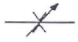
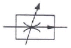
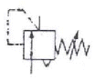
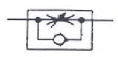
(정답률: 74%)
8. 압력의 크기가 변해도 같은 유량을 유지할 수 있는 유량 제어 밸브는?
- 니들 밸브
- 유량분류 밸브
- 압력보상 유량제어 밸브
- 스로틀 앤드 체크 밸브
(정답률: 83%)
9. 다음의 방향 밸브 중 3개의 작동유 접속구와 2개의 위치를 가지고 있는 밸브는 어느 것인가?
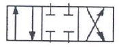
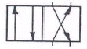
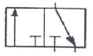
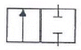
(정답률: 80%)
10. 공유압 변환기를 에어 하이드로 실린더와 조합하여 사용할 경우 주의사항으로 틀린 것은?
- 에어 하이드로 실린더보다 높은 위치에 설치한다.
- 공유압 변환기는 수평 방향으로 설치한다.
- 열원의 가까이에서 사용하지 않는다.
- 작동유가 통하는 배관에 누설, 공기 흡입이 없도록 밀봉을 철저히 한다.
(정답률: 85%)
11. 방향전환 밸브의 포핏식이 갖고 있는 특징으로 맞는 것은?
- 이동거리가 짧고, 밀봉이 완벽하다.
- 이물질의 영향을 잘 받는다.
- 작은 힘으로 밸브가 작동한다.
- 윤활이 필요하며 수명이 짧다.
(정답률: 51%)
12. 다음 중 압력 제어 밸브 및 스위치에 속하지 않는 것은?
- 압력 스위치
- 시퀀스 밸브
- 릴리프 밸브
- 유량제어 밸브
(정답률: 54%)
13. 공압 실린더의 배출 저항을 작게 하여 운동 속도를 빠르게 하는 밸브의 명칭은?
- 급속 배기 밸브
- 시퀀스 밸브
- 언로드 밸브
- 카운터 밸런스 밸브
(정답률: 86%)
14. 실린더, 로터리 액추에이터 등 일반 공압기기의 공기 여과에 적당한 여과기 엘리먼트의 입도는?
- 5[µm] 이하
- 5~10[µm]
- 10~40[µm]
- 40~70[µm]
(정답률: 52%)
15. 공압 실린더의 속도를 조정하려 한다. 이때 필요한 밸브는?
- 셔틀제어 밸
- 방향제어 밸브
- 2압제어 밸브
- 유량제어 밸브
(정답률: 83%)
16. 다음 중 방향제어 밸브에 속하는 것은?
- 미터링 밸브
- 언로딩 밸브
- 솔레노이드 밸브
- 카운터 밸런스 밸브
(정답률: 59%)
17. 펌프가 포함된 유압유닛에서 펌프 출구의 압력이 상승하지 않는다. 그 원인으로 적당하지 않은 것은?
- 릴리프 밸브의 고장
- 속도제어 밸브의 고장
- 부하가 걸리지 않음
- 언로드 밸브의 고장
(정답률: 61%)
18. 3개의 공압 실린더를 A+, B+, C+, C-, B-의 순서로 제어하는 회로를 설계하고자 할 때, 신호의 중복(트러블)을 피하려면 몇 개의 그룹으로 나누어야 하는가? (단, A, B, C : 공압 실린더, + : 전진동작, - : 후진동작)(오류 신고가 접수된 문제입니다. 반드시 정답과 해설을 확인하시기 바랍니다.)
- 2
- 3
- 4
- 5
(정답률: 60%)
19. 유압 액추에이터의 종류가 아닌 것은?
- 펌프
- 유압 실린더
- 기어 모터
- 요동 모터
(정답률: 55%)
20. 어큐뮬레이터(축압기)의 사용 목적이 아닌 것은?
- 에너지의 보존
- 유체의 누설 방지
- 유체의 맥동 감쇠
- 충격 압력의 흡수
(정답률: 44%)
2과목: 임의구분
21. 유압에너지가 가진 특성이 아닌 것은?
- 소형장치로 큰 출력을 얻을 수 있다.
- 온도변화에 큰 영향을 받지 않는다.
- 원격제어가 가능하다.
- 공기압보다 작동속도가 늦다.
(정답률: 71%)
22. 다음의 공압 실린더 중 다른 실린더에 비하여 고속으로 동작할 수 있는 것은?
- 텔리스코픽 실린더
- 충격 실린더
- 가변스트로크 실린더
- 다위치형 실린더
(정답률: 74%)
23. 유압실린더에 작용하는 힘을 산출할 때 사용되는 것은?
- 보일의 법칙
- 파스칼의 원리
- 가속도의 법칙
- 플레밍의 왼손 법칙
(정답률: 78%)
24. 다음 공압 장치의 기본 요소 중 구동부에 속하는 것은?
- 애프터 쿨러
- 여과기
- 실린더
- 루브리케이터
(정답률: 73%)
25. 구동부가 일을 하지 않아 회로에서 작동유를 필요로 하지 않을 때 작동유를 탱크로 귀환시키는 것은?
- AND 회로
- 무부하 회로
- 플립플롭 회로
- 압력설정 회로
(정답률: 74%)
26. 유압 작동유의 점도를 나타내는 단위는?
- 포아즈
- 디그리
- 리스크
- 토크
(정답률: 69%)
27. 시퀀스(Sequence)밸브의 정의로 맞는 것은?
- 펌프를 무부하로 하는 밸브
- 동작을 순차적으로 하는 밸브
- 배압을 방지하는 밸브
- 감압시키는 밸브
(정답률: 88%)
28. 다음의 유압 공기압 기호의 명칭은?
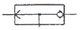
- 감압 밸브
- 고압우선형 셔틀 밸브
- 릴리프 밸브
- 급속배기 밸브
(정답률: 64%)
29. 공압 발생 장치의 구성상 필요 없는 장치는?
- 방향제어 밸브
- 공기탱크
- 압축기
- 냉각기
(정답률: 63%)
30. 공기 건조 방식 중 -70[℃] 정도까지의 저노점을 얻을 수 있는 공기 건조 방식은?
- 흡수식
- 냉각식
- 흡착식
- 저온 건조 방식
(정답률: 79%)
31. SCR의 설명 중 틀린 것은?
- SCR은 교류가 출력된다.
- SCR은 한번 통전하면 게이트에 의해서 전류를 차단할 수 없다.
- SCR은 정류 작용이 있다.
- SCR은 교류전원의 위상 제어에 많이 사용된다.
(정답률: 66%)
32. 전기기계는 주어진 에너지가 모두 유효한 에너지로 변환하는 것이 아니고 그 중의 일부 에너지가 없어지는 손실이 발생된다. 축과 베어링, 브러시와 정류자 등의 마찰로 인한 손실을 무엇이라 하는가?
- 등손
- 철손
- 기계손
- 표유 부하손
(정답률: 58%)
33. 그림과 같은 전동기 주회로에서 THR은?
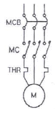
- 퓨즈
- 열동 계전기
- 접점
- 램프
(정답률: 81%)
34. 측정 오차를 작게 하기 위한 전류계와 전압계의 내부 저항에 대한 설명으로 바른 것은?
- 전류계, 전압계 모두 큰 내부 저항
- 전류계, 전압계 모두 작은 내부 저항
- 전류계는 작은 내부 저항, 전압계는 큰 내부 저항
- 전류계는 큰 내부 저항, 전압계는 작은 내부 저항
(정답률: 57%)
35. 다음 휘트스본 브리지 회로에서 X는 몇[Ω]인가? (단, 전류 평형이 되었을 때)
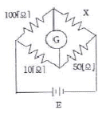
- 10
- 50
- 100
- 500
(정답률: 79%)
36. 사인파 교류 파형에서 주기 T[s], 주파수 f[Hz]와 각속도 ω[rad/s] 사이의 관계식을 나타낸 것으로 옳은 것은?
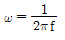
- ω=2πf
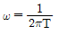
- ω=2πT
(정답률: 69%)
37. 전동기 운전 시퀀스 제어 회로에서 전동기의 연속적인 운전을 위해 반드시 들어가는 제어 회로는?
- 인터록
- 지연동작
- 자기유지
- 반복동작
(정답률: 63%)
38. △결선된 대칭 3상 교류 전원의 선전류는 상전류의 몇 배인가?
- 1/2배
- 1배
- √2배
- √3배
(정답률: 82%)
39. 그림과 같은 회로의 명칭은?
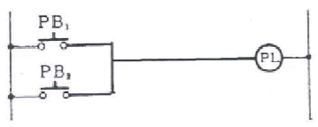
- OR 회로
- AND 회로
- NOT 회로
- NOR 회로
(정답률: 75%)
40. 백열전구를 스위치로 점등 및 소등하는 것은 무슨 제어라고 하는가?
- 정성적 제어
- 되먹임 제어
- 정량적 제어
- 자동 제어
(정답률: 75%)
3과목: 임의구분
41. 절연 전선에서는 온도가 높게 되면 절연물이 열화 되어 절연 전선으로 사용할 수 없게 되므로 전선에 안전하게 흘릴 수 있는 최대 전류를 규정해 놓고 있다. 이것을 무엇이라 하는가?
- 허용 전류
- 합성 전류
- 단락 전류
- 내부 전류
(정답률: 84%)
42. 정격이 5[A], 220[V]인 전기 제품을 10시간 동안 사용했을 때의 전력량[kWh]은?
- 1
- 11
- 21
- 31
(정답률: 77%)
43. 교류 전류 중 코일만으로 된 회로에서 전압과 전류와의 위상은?
- 전압이 90° 앞선다.
- 전압이 90° 뒤진다.
- 동상이다.
- 전류가 180° 앞선다.
(정답률: 52%)
44. 구동회로에 가해지는 펄스 수에 비례한 회전각도만큼 회전시키는 특수 전동기는?
- 분권
- 직권
- 직류 스테핑
- 타여자
(정답률: 64%)
45. 분류기를 사용하는 전류를 측정하는 경우 전류계의 내부 저항 0.12[Ω], 분류기의 저항 0.03[Ω]이면 그 배율은?
- 6
- 5
- 4
- 3
(정답률: 34%)
46. 다음 입체도에서 화살표 방향을 정면으로 한 제3각 정투상도로 가장 적합한 것은?
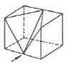
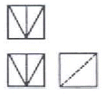
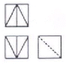
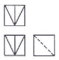
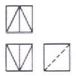
(정답률: 80%)
47. 보기와 같이 화살표 방향을 정면도로 선택하였을 때 평면도의 모양은?
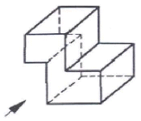
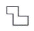
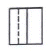
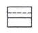
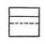
(정답률: 82%)
48. 투상면이 각도를 가지고 있어 실형을 표시하지 못할 때에는 그림과 같이 표시할 수 있다. 무슨 투상도인가?
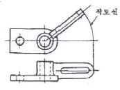
- 보조 투상도
- 회전 투상도
- 부분 투상도
- 국부 투상도
(정답률: 58%)
49. 배관의 간략 도시 방법에서 체크 밸브 도시 기호는?
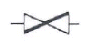
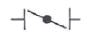
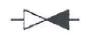
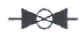
(정답률: 57%)
50. 치수에 사용하는 기호이다. 잘못 연결된 것은?
- 정사각형의 변 - □
- 구의 반지름 - R
- 지름 - ø
- 45° 모따기 - C
(정답률: 78%)
51. 기계제도에서 대상물의 일부를 떼어낸 경계를 표시하는 데 사용하는 선의 명칭은?
- 가상선
- 피치선
- 파단선
- 지시선
(정답률: 78%)
52. 다음 KS용접기호 중 플러그 용접 기호는?
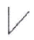
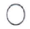
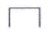
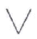
(정답률: 67%)
53. 원형봉에 비틀림 모멘트를 가하면 비틀림이 생기는 원리를 이용한 스프링은?
- 코일 스프링
- 벌류트 스프링
- 접시 스프링
- 토션바
(정답률: 67%)
54. 직경 12[mm]의 환봉에 축방향으로 5,000[N]의 인장 하중을 가하면 인장응력은 약 몇 [N/mm2]인가?
- 44.2
- 66.4
- 98.6
- 132.6
(정답률: 46%)
55. 링크가 스프로킷 휠에 비스듬히 미끄러져 들어가는 구조로 되어 있어 고속운전 또는 정숙하고 원활한 운전이 필요할 때 사용하는 체인은?
- 롤러 체인
- 핀틀 체인
- 사이런트 체인
- 블록 체인
(정답률: 58%)
56. 호칭번호가 6208로 표기되어 있는 구름베어링이 있다. 이 표기 중에서 08이 뜻하는 것은?
- 틈새 기호
- 계열 번호
- 안지름 번호
- 등급 기호
(정답률: 75%)
57. 접촉면의 압력을 p, 속도를v, 마찰계수가 u일 때 브레이크 용량(Brake Capacity)을 표시하는 것은?
- upv
- 1/upv
- pv/u
- u/pv
(정답률: 58%)
58. 너트(Nut)의 풀림을 방지하기 위하여 주로 사용되는 핀은?
- 평행 핀
- 분할 핀
- 테이퍼 핀
- 스프링 핀
(정답률: 57%)
59. 동력전달에 필요한 마찰력을 주기 위하여 정지하고 있을 때 벨트에 장력을 준 상태에서 벨트 풀리에 끼워 접촉면에 알맞은 합력이 작용하도록 하는데 이 장력을 무엇이라 하는가?
- 말기 장력
- 유효 장력
- 피치 장력
- 초기 장력
(정답률: 37%)
60. 부품을 일정한 간격으로 유지하고 구조물 자체를 보강하는 데 사용되는 볼트는?
- 기초 볼트
- 아이 볼트
- 나비 볼트
- 스테이 볼트
(정답률: 75%)